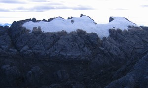
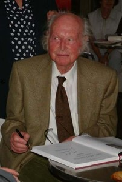
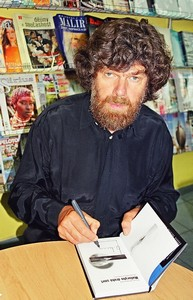

Navigation
- Carstensz Pyramid
- PROGRAMS & SCHEDULE
- Our most imporant expeditions
- LAST CARSTENSZ REFERENCIES
History of climbing the summit
- Legendary Carstensz climbers
- Seven Summits
- 7 Summits - History
- 7 faces of Carstensz Pyramid
- Photos from climbing
- The nature and flora
- Trekking around Carstensz
- Climbing routes to the summit
- 7summits Carstensz best Base camp
- The Tribes and People
- Climate and weather
- Climbing permits
- How to go
- The Highest Mountain of Papua New Guinea
- Why to go with us
- Malaria
- Wrote about us
- References
- Links
- Contact us
- Download


Carstensz Pyramid (Puncak Jaya) – The history of climbing
.JPG)
Carstensz Pyramid dressed in Ice Photo©JahodaPetr.com
The history of conquering the summit of the Carstensz Pyramid is full obstacles and mistakes. They include the impassable jungle, the confrontation with primitive tribes that have cannibalistic tendencies, the absence of maps and generally any information, the dangers of the Second World War, and finally the present problems with the guerilla freedom movement (OPM). Despite that, these days it is possible to get to the base camp by helicopter. It could be said that climbing this mountain is not a problem anymore, but the opposite is true.
The presence of the world's largest goldmine (Grasberg), the unwillingness of Freeport of Indonesia, and the never ending bureaucracy and insistance of having the number of necessary permits, make Carstensz one of the most difficult summits within the Seven Summits.
The helicopter is immensely expensive, and trekking from the nearest airport takes six days. What's more, a permit is needed for either of these. The mountain is frequently, and for a long periods of time, closed for all the expeditions. The last time this happened was between 1995 to July 2005. If you don't have the required permit, even a helicopter won't help you. Pilots are not allowed to take you on board because their company would loose the permit to fly in Papua if they do.
The mistake of the Dutch expedition in 1936

View on Nga Pulu from Carstensz Photo©JahodaPetr.com
Attempts to climb the highest peak of the Papuan island's New Guinea, were not made before the Second World War. In 1936 the Royal Netherlands Geographical Society sponsored a group of climbers lead by Colijn to climb the highest peak. They did not climb the Carstensz Pyramid but Ngga Pulu, which was considered the highest in their time.
The region's glaciers have shrinked since then substantially, and consequently, the rocky Carstensz has since then been found higher. After the war, the focal point of Mountaineering was the Himalayas and the Andes. In the 1960s, the interest of climbers began to shift towards Carstensz once again.
Heinrich Harrer – the first white man on Carstensz – 1962

Heinrich Harrer Photo©Alfred Eder
The first mountaineer who made it to the top of Carstensz Pyramid was the Austrian climber Heinrich Harrer. This was on 13 February 1962. The other climbers in his team were Russell Kippax and Albert Huizenga. The fate of Heinrich Harrer during the Second World War, and his meeting with the young Dalailame, was depicted in the movie „Seven years in Tibet“.
Heinrich Harrer wrote a bestselling book about his expedition entitled „I come from the Stone Age“. In it he gives a description of his first ascent of the Carstensz Pyramid, and he also describes all the surrounding summits. A large part of the book is devoted to his stay in Papua. Despite all the adventures, which he had encountered during his long and rich life, Heinrich Harrer died at the respectable age of 93. He died on January 7, 2006 in Austria.
Carstensz contra Reinhold Messner

Reinhold Messner Photo©JahodaPetr.com
Dick Basse is the man who invented the Seven Summits project ? climbing the seven highest peaks of the seven continents (meant geographically not geologically). The seven peaks are Mt Everest 8850m (29035 ft) – Asia, Aconcagua 6968 m (22861 ft)? South America, Denali / Mc Kinley 6195 m (20325 ft)? North America – Alaska, Kilimanjaro 5963 m (19564 ft) – Africa, Elbrus 5642 m (18511 ft) – Europe, Vinson Massif 4897 m (16066) – Antarctica and Kosciusko 2229 m (7313 ft) – Australia.
There were some doubts about Australia. The highest peak of Australia is Mt. Kosciusko, which can be reached by tourists. Reinhold Messner, the second person to finish the Seven Summits project (not long after Dick Bass), included the Carstensz Pyramid in the project. He advocated leaving out Kosciusko. The reason stated by Messner, is that Carstensz Pyramid 4884 m (16023 ft) is the highest mountain of Australia and Oceania.
This divided the mountaineers into two camps, Kosciusko and Carstensz. It was (and still is) difficult to arrive to a final judgment as discussed on our 7 Summits history page. Regardless of which of the two mountains belong among the 7 Summits, the Carstensz Pyramid became the eight summit of the Seven Summits project. Without it the project is considered unfinished. This is the reason why it now attracts the top climbers from all over the world, and you would be surprised at who you might meet at the Base Camp.